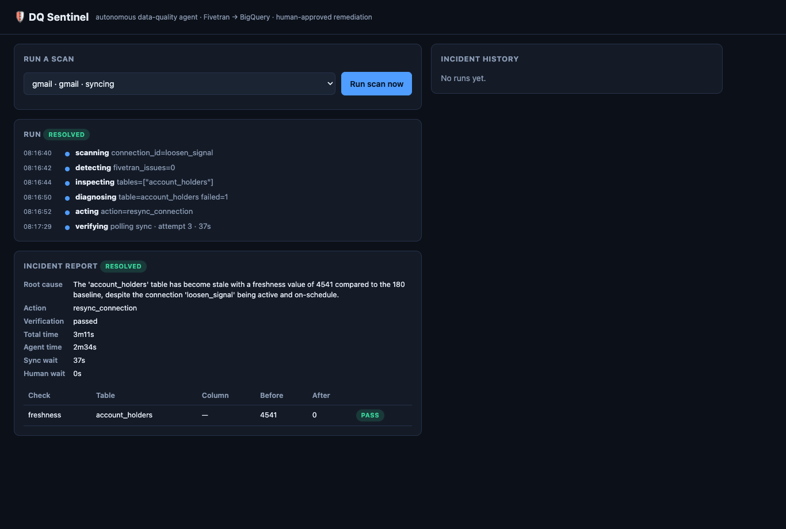

An autonomous data-quality agent for Fivetran → BigQuery —
that fixes pipelines, but never writes without your approval.
https://dq-sentinel-sjsibsau7a-uc.a.run.app
The problem
Pipelines break silently.
- A column gets renamed upstream → your column is now 100% null.
- A sync goes stale → dashboards quietly serve 3-day-old data.
- Rows vanish → metrics drift and nobody gets paged.
By the time someone notices, the wrong number is already in a report.
What it is
A 7-step loop — not a chatbot
Steps 1–4 & 6–7 are autonomous. Step 5 blocks until a human decides.
The differentiator
The approval gate is structural, not a prompt
- Gemini is given exactly one tool:
propose_remediation. - It has zero Fivetran write tools in scope — it physically cannot sync, resync, or reload.
- The write runs in separate app code, only after a human approves the specific plan — bridged over HTTP with an asyncio.Future.
- The UI shows the exact MCP call + arguments before you click.
Verified: 15/15 gate tests + a 23-agent adversarial review (0 blockers).
diagnose model tools = [propose_remediation] # no writes await approval(proposal, planned_call) # PARKS ──▶ browser shows the plan, waits for a click ──▶ POST /decision resolves the Future act.act(...) # only reachable here, post-approval
Live · the gate in the browser
Diagnosed → awaiting your approval

The agent stops and surfaces:
- MEDIUM severity
- the root-cause hypothesis
- the evidence (the actual numbers)
- the precise
resync_connection(...)call it will run - Approve · Reject · Modify-targets
No Fivetran write happens until you click Approve.
Live result · verified end-to-end
Stale data → resync → resolved

Gemini reasoned a normal sync won't rewrite unchanged rows' timestamps → proposed a full resync_connection. Approved → real Fivetran write → freshness re-check passed.
Every run emits an incident report: detected issues · root cause · approved action · before/after · TTR.
Built on
Gemini · Fivetran MCP · BigQuery · Cloud Run
(loop 26 · gate 15 · http 16)
23-agent adversarial review
on Cloud Run
https://dq-sentinel-sjsibsau7a-uc.a.run.app